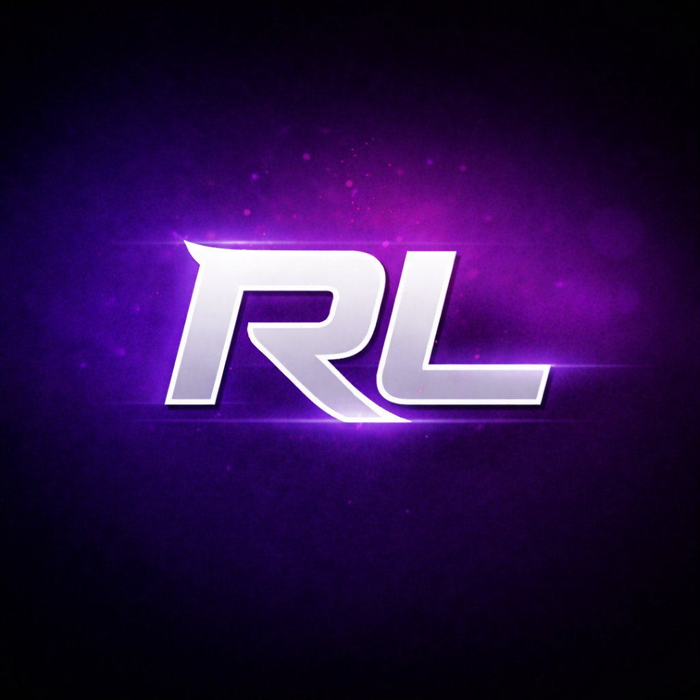
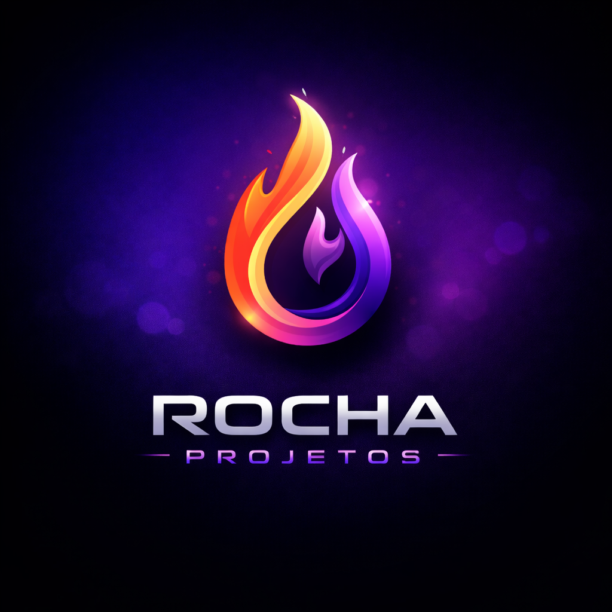
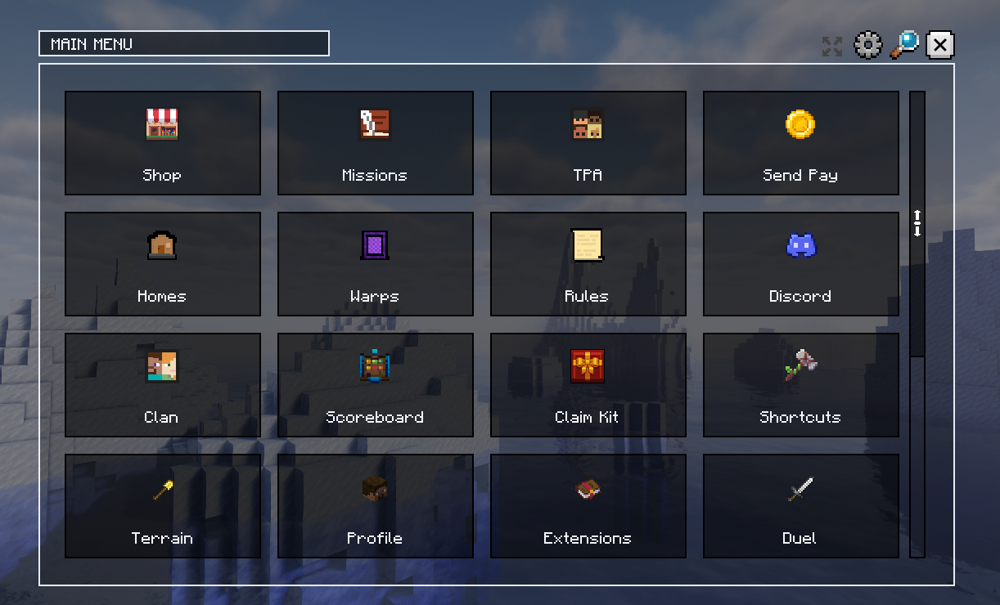

Launcher Java/Bedrock, sessoes e downloads.

Rocha ProjectWiki Rocha Project
Escolha um projeto para abrir o manual. A ideia aqui e ser rapido: nada de parede de texto logo de cara.
Instalacao, painel web, modulos, comandos e configuracao.

Launcher Java/Bedrock, sessoes e downloads.

Cliente, mod, cosmeticos e integracao com servidor.
AuraEssentials
Os topicos ficam recolhidos para a pagina nao virar uma parede de texto. Use a lateral ou abra pelo sinal de +.
Use Paper, Purpur ou Pufferfish na linha 1.21.9+. O plugin foi feito para rodar como plugin Bukkit/Paper normal, sem proxy obrigatorio.
plugins/.plugins/AuraEssentials/config.yml, shop.yml e missions.yml quando quiser ajustar manualmente./aurasetup reload depois de alterar configs manualmente.Geyser/Floodgate sao softdepend. Se estiverem presentes, o menu Bedrock e forms administrativos ficam mais naturais para jogadores Bedrock.
/plugins
auraessentials-1.0.5-obf.jar
/plugins/AuraEssentials
config.yml
shop.yml
missions.yml
aura-panel.ymlLista principal de permissões do plugin para administração, login, terrenos, teleporte, VIP e moderação.
kingdoms.adminAdministra o plugin, abre painel, muda sistemas, NPC, holograma, economia, cargos e servidor. (padrao: OP)kingdoms.rapidologinPermite usar /rapidologin para autenticar jogador rapidamente. (padrao: OP)kingdoms.gravetoPermite pegar o graveto de captura com /graveto. (padrao: todos)kingdoms.graveto.usePermite usar o graveto de captura nos mobs liberados. (padrao: todos)kingdoms.vanishPermite usar /vanish. (padrao: OP)kingdoms.vanish.seePermite ver jogadores que estao em vanish. (padrao: OP)kingdoms.terrenoPermite usar /terreno; o servidor ainda pode exigir VIP. (padrao: todos)kingdoms.vincularPermite usar /vincular para conectar Discord. (padrao: todos)kingdoms.autopickupPermite alternar AutoPickup pessoal. (padrao: todos)kingdoms.claPermite usar o sistema de cla. (padrao: todos)kingdoms.cla.createPermite criar um cla. (padrao: todos)kingdoms.serversPermite abrir a lista de servidores para transferencia. (padrao: todos)kingdoms.auctionPermite usar o leilao entre jogadores. (padrao: todos)kingdoms.rtpPermite /rtp. (padrao: todos)kingdoms.rtp.bypassIgnora cooldown do RTP. (padrao: OP)kingdoms.inspectPermite /verinv e /verender. (padrao: OP)kingdoms.flyPermite usar /fly. (padrao: OP)kingdoms.gamemodePermite usar /gm. (padrao: OP)kingdoms.setspawnPermite definir o spawn do lobby. (padrao: OP)kingdoms.timefreezePermite usar /congelar e /freezy. (padrao: OP)kingdoms.proxyportalPermite criar e remover portais proxy customizados. (padrao: OP)kingdoms.caixa.adminPermite administrar Caixas e Chaves. (padrao: OP)kingdoms.maintenance.adminPermite administrar o modo manutencao. (padrao: OP)kingdoms.maintenance.bypassIgnora o redirecionamento do modo manutencao. (padrao: OP)kingdoms.nickPermite usar /mudarnick sem depender de VIP. (padrao: nenhum)kingdoms.chat.globalPermite usar /g quando o global estiver bloqueado para membros. (padrao: OP)kingdoms.chat.global.bypassIgnora bloqueio e cooldown do chat global. (padrao: OP)kingdoms.shopchest.createPermite criar lojas de bau. (padrao: todos)kingdoms.shopchest.usePermite comprar e vender em lojas de bau. (padrao: todos)kingdoms.shopchest.adminPermite proteger e remover lojas de bau. (padrao: OP)O painel web edita um rascunho seguro. Nada e aplicado direto no servidor enquanto um admin nao confirmar dentro do jogo.
/aurapainel link
/aurapainel tags
/aurapainel status
/aurapainel alteracoes
/aurapainel aplicar
/aurapainel rejeitar
# aliases EN
/aurapanel link|tags|status|changes|apply|rejectDepois de vincular o servidor na sua conta Rocha, ele aparece em Perfil > Servidor Aura. O link temporario expira em ate 30 minutos.
A sessao e criada apenas para administradores. O plugin envia um snapshot, o site salva um rascunho e o servidor so aplica depois de /aurapainel aplicar.
Cada modulo pode ser ligado/desligado em modules.enabled, pelo painel em Configurar ou por /aurasetup toggle <modulo>.
/aurasetup status
/aurasetup toggle loja
/aurasetup enable discord
/aurasetup disable combatlog
/aurasetup reloadO sistema de crates sorteia premios configurados por caixa. Admin define local, chave, premios, preview, animacao e efeitos.
/caixa menu
/caixa definir <id>
/caixa chave <id>
/caixa addpremio <id>
/caixa preview <id>
/caixa listar
/caixa remover <id>
/chavesJogadores acumulam chaves conforme o tempo jogado e o cargo. O sistema usa o modulo keys_timer e a tela /chaves.
A entrega depende das configurações de tempo/cargo e pode ser consultada na tela de chaves.
O chat local usa raio e mundo; o global pode ter bloqueio para membros, permissão e cooldown. Bedrock pode receber chat Vanilla.
/g <mensagem>
/l <mensagem>Além da loja global, jogadores podem criar lojas de baú e placas quando shop_chest estiver ativo.
/playerloja removerControla /spawn, retorno ao entrar, posição de lobby e salvamento do local anterior.
/spawn
/setspawnLeilão simples entre jogadores com aliases /auction, /leilao e /ah.
A manutenção redireciona jogadores pelo proxy. O bypass administrativo usa uma permissão separada e o destino depende da configuração do proxy.
/manutencao status|on|off|destino|atualO sistema cria rotas de transferência usando regiões cúbicas marcadas manualmente ou uma rota por raio baseada no bloco de portal Nether Vanilla mais próximo. Não existe detecção automática de qualquer portal sem configurar uma rota.
/proxyportal pos1|p1
/proxyportal pos2|p2
/proxyportal area <id> <servidor>
/proxyportal raio <id> <servidor> [raio]
/proxyportal retorno <id> spawn|portal
/proxyportal listar
/proxyportal remover <id>
/proxyportal fillcmdNo modo area, você marca dois cantos e o plugin converte a região em blocos de construção/efeitos. No modo raio, ele procura o portal Nether Vanilla mais próximo na hora de salvar a rota; durante o uso, a entrada precisa tocar um portal Vanilla dentro do raio configurado.
/registrar <senha> /entrar <senha> /mudarsenha <novaSenha>
/ajuda /regras /menu /saldo /enviarpix <jogador> <valor>
/loja [comprar|vender|listar|remover] /playerloja remover
/leilao [sell|buy|remove|list] /tpa <jogador> /tpahere <jogador>
/aceitar [jogador] /negar [jogador] /warp [nome] /warps
/rtp /spawn /sethome <nome> /home <nome> /homes /delhome <nome> /back
/duelo <jogador> /g <mensagem> /l <mensagem> /pvp /desativar
/autopickup [ligar|desligar|status] /kit /kits /missao [ativar|listar]
/cancelar missao /chave <codigo> /chaves /cla /. [entrar|sair|<mensagem>]
/graveto /vincular [codigo] /skin <nick> /textura /servers
/menuadmin /lojaadmin /setvip <jogador> <vip|none> /set chave <tipo> <jogador>
/entregarcargo /criarcargo /npc /holograma /expirarvip /gerarchave
/resetkitvip /setwarp <nome> /delwarp <nome> /setspawn /gm <modo>
/rapidologin <jogador> /multiconta /setborder <tamanho> /aurasetup /aurapainel
/manutencao /proxyportal /caixa /dinheiro /clearlag /protecao /vanish
/desvincular <jogador> /verinv <jogador> /verender <jogador> /congelar /fly
/cla criar <tag> [cor] [nome] /cla membros /cla aliados /cla aliar <cla>
/cla aceitaralianca <cla> /cla removeralianca <cla> /cla convidar <jogador> /cla aceitar
/cla banco guardar|retirar <valor> /cla perfil /cla retag <tag> /cla renomear <nome>
/cla descricao <texto> /cla cor <cor> /cla cargo <jogador> <dono|subdono|membro>
/cla expulsar <jogador> /cla sair /cla deletar /cla base /cla enderchest
/cla setwarp <nome> /cla warp <nome> /cla chat [on|off|toggle|status] /cla pvp [on|off]
/terreno [criar|registrar|permitir|remover|listar|deletar|ver] /protecao
/lojaadmin definircompra|definirvenda|listar|recarregar /clearlag [agora|status]
/dinheiro adicionar|remover /caixa definir|listar|chave|dar|addpremio|premio|preview
/npc criar|listar|remover|limparsoltos|editar /holograma criar|listar|remover|editar
/proxyportal ativar|criar|listar|remover|retorno|raio|limparareas|limpartudo|recarregar
/aurasetup ativar|desativar|alteracoes|aplicar|rejeitar|painel|recarregar|idioma|placarSistema de registro local para servidor offline/online misto, com senha, troca de senha, controle de sessao e protecoes contra multiconta.
/registrar <senha>Cria a senha do jogador./entrar <senha>Autentica a sessao atual./mudarsenha <novaSenha>Troca a senha da conta./rapidologin <nome>Admin autentica um jogador manualmente./multiconta ...Admin controla limite de contas por IP.Configuracoes principais: enableIpTrust, trustedDurationSeconds, multiAccount, modGate.requireAuraClient, authRouting e packs Java/Bedrock.
Integra vinculo de conta, bridge e exigencia de Discord. O token do bot fica no servidor, nunca no site publico.
/vincularGera codigo para vincular Minecraft ao Discord./vincular <codigo>Consome codigo recebido pelo fluxo do bot./desvincular <jogador>Admin remove vinculo de um jogador.Campos importantes: discordLink.botToken, controlChannelId, forceOnJoin, requiredAfterHours e useOriginalServerText.
Use chatChannelId para o canal publico de bridge e controlChannelId para o canal privado de controle entre bots. forceOnJoin e requiredAfterHoursEnabled podem exigir vinculo no login.
Menu de compra/venda com categorias, produtos, icone por item Minecraft, valor de compra, valor de venda e moeda configuravel.
/lojaAbre a loja./loja comprar|vender|listarUsa loja por comando quando GUI nao for ideal./loja vender <item> <quantidade|tudo>Vende uma quantidade ou tudo quando usar o argumento all./loja buy|sell|list|removeAliases EN aceitos pelo executor da loja./shopadmin setbuy|setsell|list|reloadAdministra valores por comando.Arquivo principal: shop.yml. Pelo painel, use Loja > Catalogo para revisar e Loja > Editar produtos para adicionar/remover itens.
Missoes com categorias e objetivos de matar mobs, minerar blocos ou colher plantacoes. O jogador ativa uma missao, progride e pode cancelar.
/missaoAbre o menu de missoes./missao ativar <id>Ativa uma missao por ID./missao listar [categoria]Lista missoes carregadas./cancelar missaoCancela missao ativa e remove progresso.Arquivo principal: missions.yml. Configuracoes: missions.autosaveSeconds e missions.repeatCooldownSeconds.
Categorias atuais incluem mining e farming; use /quest activate e /quest list como aliases EN.
Controla VIPs, cargos visuais, chaves de ativacao, kit VIP e utilidades como bau, craft, bigorna e topo.
/setvip <player> <vip|none>Define ou remove VIP./entregarcargo <player> <cargo|none>Define cargo visual especial./gerarchave <vip> <tempo>Cria chave de uso unico./chave <codigo>Ativa uma chave VIP./kitvip [tipo]Entrega kit do VIP./resetkitvip <jogador>Libera novo uso do kit VIP.No painel, VIPs podem ter itens, quantidade, lore, nome customizado, brilho, inquebravel e encantamentos Vanilla/NBT.
O kit VIP e de uso unico por VIP quando vipKit.singleUsePerVip esta ativo; /resetkitvip libera novo uso.
O plugin separa visual de chat, nametag e tablist. Os glyphs dependem do resource pack Java/Bedrock para aparecerem corretos.
chat_message: formato das mensagens no chat.nametag_player: texto acima da cabeca.tablist: visual na lista de jogadores.Use codigos Minecraft como &6&l nos campos que aceitam texto formatado. O painel renderiza previa com a formatacao basica.
NPCs do servidor com skin, titulo, descricao, acao e posicao. Podem abrir menu, TPA, loja, missoes ou executar comando configurado.
/npc criar <id> [skinNick]
/npc listar
/npc remover <id>
/npc limparsoltos
/npc editar <id> skin <nick>
/npc editar <id> titulo <texto>
/npc editar <id> descricao <texto>
/npc editar <id> acao <menu|tpa|loja|missao|comando>
/npc editar <id> comando <texto>
/npc editar <id> posicao <x> <y> <z> [mundo]
# aliases EN: create list remove cleanup edit modshortcut title description action command rename positionConfig global: npc.renderDistanceChunks e npc.hologramOffsetY.
Valores atuais: renderiza a 1 chunk e usa offset de holograma 2.05. As skins nomeadas ficam em npc_visuals.yml.
Hologramas simples para avisos, lobby, lojas e areas do servidor.
/holograma criar <id>
/holograma listar
/holograma remover <id>
/holograma editar <id> titulo <texto>
/holograma editar <id> descricao <texto>
/holograma editar <id> aqui
/holograma editar <id> posicao <x> <y> <z> [mundo]
/holograma editar <id> excluir|filtrar <texto>
/holograma editar <id> incluir|desfiltrar <texto>
/holograma editar <id> limparfiltro|fundoseparado
# aliases EN: create list remove edit title description here position exclude filter include unfilter clearfilter splitbackgroundConfig global: holograma.renderDistanceChunks, backgroundEnabled e lineWidth.
Valores atuais: renderiza a 1 chunk, fundo ligado e largura de linha 220.
Sistema de grupo de jogadores com tag, nome, descricao, cor, membros, subdonos, base, warps, banco, chat, aliancas e PvP interno.
/cla criar <tag> [cor] [nome]
/cla info
/cla membros
/cla ranking
/cla convidar <jogador>
/cla aceitar
/cla base
/cla base set
/cla setwarp <nome>
/cla warp <nome>
/cla banco guardar <valor>
/cla banco retirar <valor>
/cla chat [on|off|toggle|status]
/cla cargo <jogador> <subdono|membro>
/. <mensagem>Config principal: tamanho de tag/nome, maximo de membros, warps, banco, aliancas, PvP interno e auto delete quando so resta dono.
Valores atuais: tag 2-5 caracteres, nome 3-16, descricao ate 60, 10 membros, 2 subdonos, 1 warp, convite por 300s e auto-delete apos 10h somente com o dono. Aliancas, PvP interno, Ender Chest, warp extra, cargos e banco estao habilitados.
Claim de chunk 16x16. O jogador pega uma pa de terreno e registra o chunk clicando em um bloco. Por padrao pode exigir VIP.
/terrenoPega a pa de claim./terreno permitir <jogador>Autoriza outro jogador no terreno./terreno remover <jogador>Remove permissao./terreno listarMostra terrenos./terreno verMostra borda do chunk atual./terreno deletar [jogador]Remove claim proprio ou de outro como admin.Config atual: VIP e obrigatorio; limite de 4096 blocos para membro, 16384 para VIP e 262144 para admin. O limite VIP e separado do limite comum.
Areas administrativas por selecao de duas posicoes. Serve para spawn, lojas, arenas ou regioes especiais.
/protecao ferramenta [nome]
/protecao pos1
/protecao pos2
/protecao toggle <area> <break|place|interact|bucket|entry|monster|pvp|entity_damage|explosion>
/protecao permitir <area> <jogador>
/protecao remover <area> <jogador>
/protecao listar
/protecao deletar <area>As flags aceitas incluem break, place, interact, buckets, entry, monsters, pvp, entity_damage e explosions. A area pode ser criada com duas posicoes e administrada pelo painel ou comando.
Dois textos simples para orientar jogador dentro do servidor. Aceitam codigos de cor Minecraft e link de wiki.
/regrasMostra titulo, linhas de regras e link configurado./ajudaMostra comandos basicos, instrucoes de login e link configurado.Campos principais: texts.regrasTitle, texts.regras, texts.regrasWikiUrl, texts.ajudaTitle, texts.ajuda e texts.ajudaWikiUrl.
/tpa <player>, /aceitar <player>, /negar <player> e /back. Pode bloquear por dimensao.
/setwarp, /warp, /sethome, /home, /delhome e /rtp. RTP respeita raio, cooldown, world border e agua/lava.
Config atual: RTP tem cooldown de 300s, warmup de 3s, raio de 250 a 5000, ate 24 tentativas e esta habilitado apenas no Overworld por padrao. TPA e Back estao habilitados no Overworld, Nether e End.
Sistemas de PvP personalizado, duelos e combat log com protecoes de saida e bloqueios em combate.
/pvp ligado|desligado|statusJogador muda estado pessoal de PvP./desativar pvp <dimensao> <on|off|status>Admin controla PvP por dimensao./duelo <jogador>Cria desafio PvP em arena temporaria.CombatLog pode bloquear warp, tpa, rtp, home e back durante combate. Tambem pode matar ao sair, se configurado.
Config atual: combate dura 8s; bloqueia warp, TPA, RTP, home, back e base do cla; mostra actionbar e nao mata ao sair por padrao. Duelo aceita as tres dimensoes, com convite de 30s, pronto de 45s e countdown de 3s.
Define tamanho e centro de world border para Overworld, Nether e End. Pode ser ativado pelo modulo border.
Comando rapido: /setborder <tamanho> usa sua posicao atual como centro no mundo em que voce esta.
Remove materiais proibidos do inventario e pode verificar Ender Chest. Configure em blockedItems.materials ou pelo painel em Itens bloqueados.
Use para bloquear command block, bedrock, barreiras ou qualquer material que nao deve circular.
Por padrao, o modulo border e itens bloqueados comecam desativados. A border inicial e 8000 no Overworld, 5000 no Nether e 12000 no End; itens bloqueados verificam tambem Ender Chest quando ativados.
Menu, kits, saldo, pix, clearlag, graveto, autopickup, skin, vanish e inspeccao para o dia a dia do jogador.
/menuMenu principal Bedrock/Geyser./menuadminMenu administrativo Bedrock./kitKit inicial de uso unico./saldoMostra saldo./dinheiro adicionar|removerAdmin altera saldo./enviarpix <jogador> <valor>Transfere moedas./clearlag [agora|status]Limpa drops configurados./gravetoRecebe item de captura de mobs liberados./autopickup [ligar|desligar|status]Controla coleta automatica./skin <nick>Define skin oficial por nick./vanishInvisibilidade para staff./verinv / /verenderInspecao de inventario e ender chest.AutoPickup esta ativo por padrao para blocos, mobs e pesca; o jogador pode alternar e recebe aviso de inventario cheio. ClearLag roda a cada 600s, remove drops com pelo menos 30s, ignora itens com nome customizado e avisa em 60s e 5s.
Checklist rapido para os erros mais frequentes de glyphs, comandos, painel e login.
O jogador nao carregou o resource pack correto. Confira javaResourcePack, bedrockResourcePack e se o servidor exige o pack.
Confira se o modulo esta ativo em modules.enabled ou no painel Configurar. Depois use /aurasetup reload e peça para o jogador relogar se necessario.
Salvar no site cria rascunho. Entre no servidor e use /aurapainel alteracoes e depois /aurapainel aplicar.
Revise discordLink.botToken, controlChannelId, permissoes do bot no canal e se o modulo Discord esta ativo.
Confira Login, Multiconta, AuthRouting, exigencia do AuraClient e se /registrar//entrar estao liberados para membros.
Confira o modulo em modules.enabled e tambem a chave interna correspondente, como clearLag.enabled, blockedItems.enabled ou autoPickup.enabled. Depois execute /aurasetup reload.